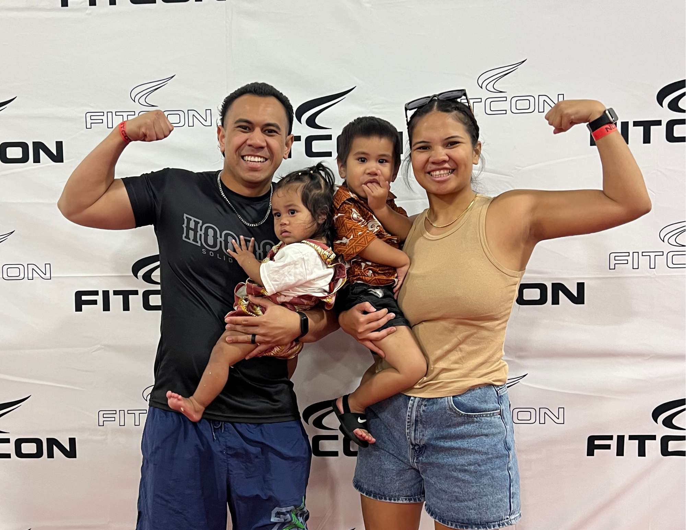
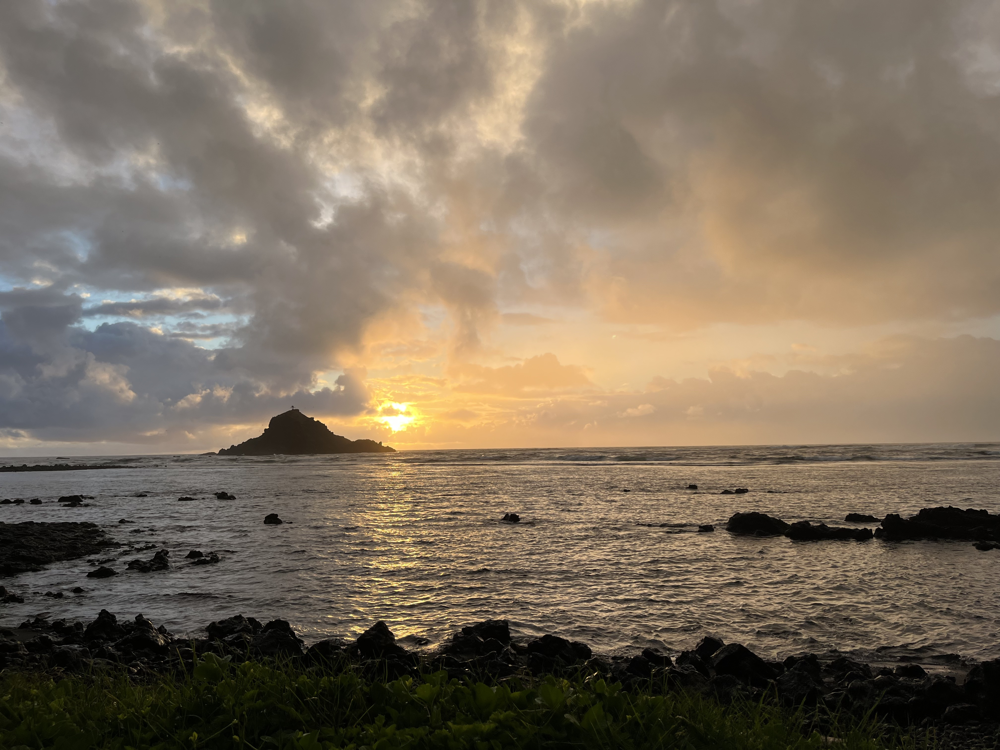

About Me

Aloha,
I'm Lagi
I'm a Computer Science graduate from BYU–Hawaiʻi seeking an entry-level front-end or web development role. I build things that are accessible, culturally grounded, and made for real people.

If you really want to know me — I have two keiki who keep my head spinning. I'm married to an amazing Samoan man from New Zealand. My hobbies include baking, weightlifting, and creating cultural crafts I grew up learning how to make.
I'm passionate about health and fitness, and I believe everyone deserves access to tools that support their well-being. I hope to build a platform for my hometown of Hāna, Maui — helping residents set health goals and make the most of what's available to them.

Community Health & Fitness Platform for Hāna (Name Pending)
In ProgressA health and movement tracker for residents of Hāna, Maui — login, save goals, and track progress over time. Stack: React 18 + Firebase.
Planning · awaiting React (Phase 2)Pluralsight — Phase 1: Foundations
ActiveHTML, CSS, JavaScript, and Git — working through the Pluralsight Utah Tech Series toward a Junior Front-End Developer role. Target: 5 hrs/week through Aug 2026.
Phase 1 of 4 · Week 1